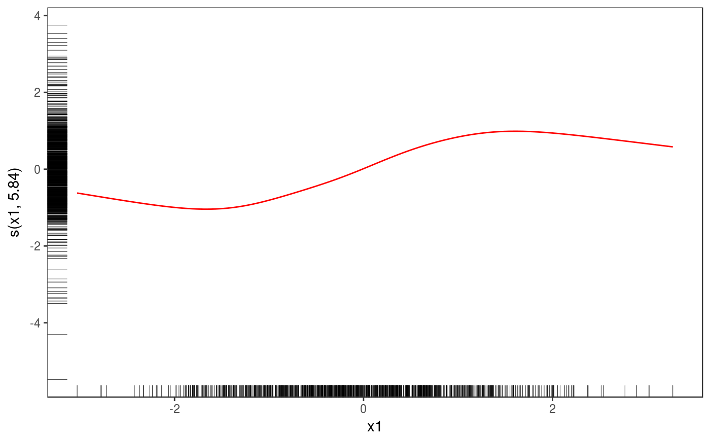
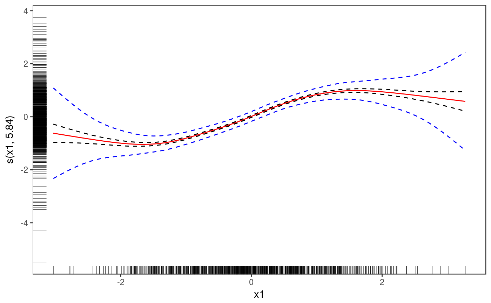
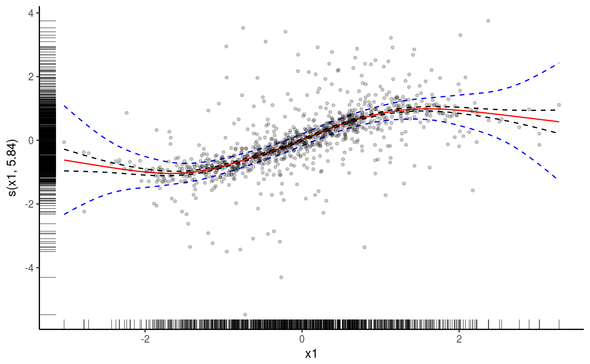
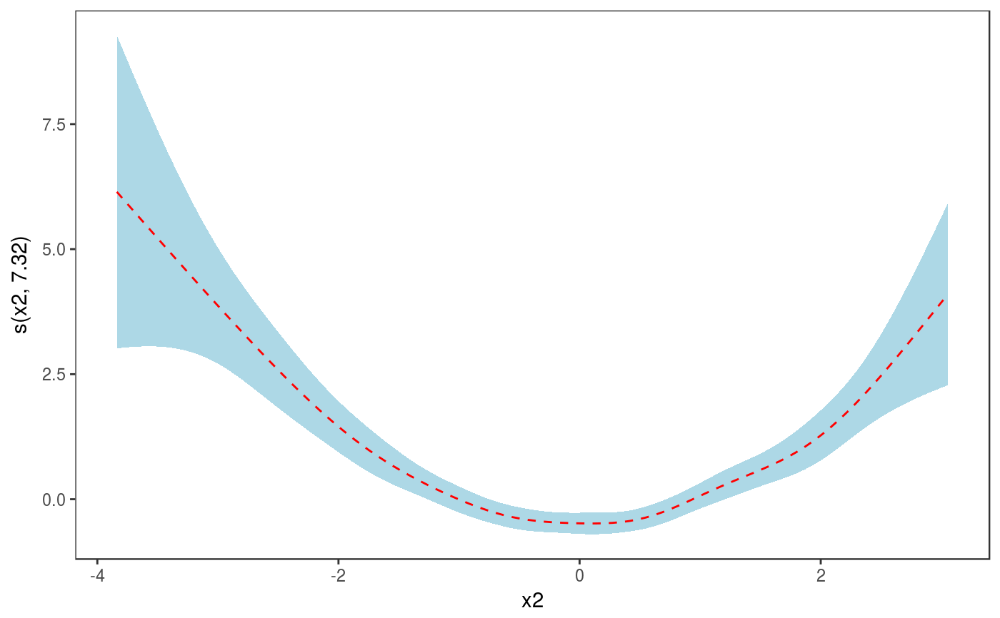
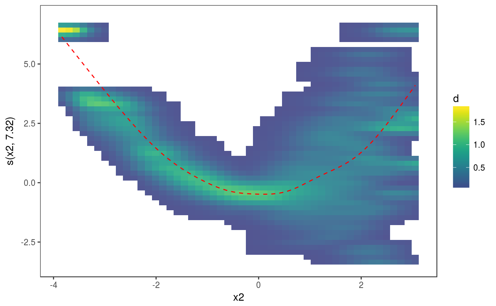
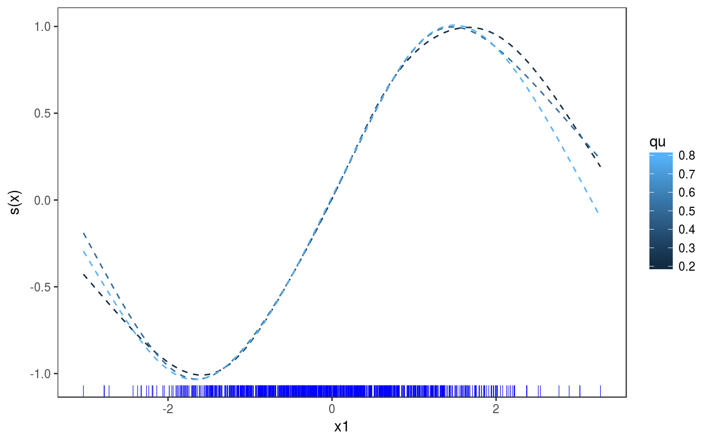

R/plot_mgcv_smooth_1D.R, R/plot_multi_mgcv_smooth_1D.R
plot.mgcv.smooth.1D.RdPlotting method for one dimensional smooth effects.
# S3 method for mgcv.smooth.1D plot(x, n = 100, xlim = NULL, maxpo = 10000, trans = identity, unconditional = FALSE, seWithMean = FALSE, ...) # S3 method for multi.mgcv.smooth.1D plot(x, n = 100, xlim = NULL, maxpo = 10000, trans = identity, unconditional = FALSE, seWithMean = FALSE, ...)
| x | a smooth effect object, extracted using mgcViz::sm. |
|---|---|
| n | number of grid points used to compute main effect and c.i. lines. For a nice smooth plot this needs to be several times the estimated degrees of freedom for the smooth. |
| xlim | if supplied then this pair of numbers are used as the x limits for the plot. |
| maxpo | maximum number of residuals points that will be used by layers such as
|
| trans | monotonic function to apply to the smooth and residuals, before plotting. Monotonicity is not checked. |
| unconditional | if |
| seWithMean | if TRUE the component smooths are shown with confidence intervals that include the uncertainty about the overall mean. If FALSE then the uncertainty relates purely to the centred smooth itself. Marra and Wood (2012) suggests that TRUE results in better coverage performance, and this is also suggested by simulation. |
| ... | currently unused. |
An objects of class plotSmooth.
Marra, G and S.N. Wood (2012) Coverage Properties of Confidence Intervals for Generalized Additive Model Components. Scandinavian Journal of Statistics.
library(mgcViz) n <- 1e3 x1 <- rnorm(n) x2 <- rnorm(n) dat <- data.frame("x1" = x1, "x2" = x2, "y" = sin(x1) + 0.5 * x2^2 + pmax(x2, 0.2) * rnorm(n)) b <- bam(y ~ s(x1)+s(x2), data = dat, method = "fREML", discrete = TRUE) b <- getViz(b) o <- plot( sm(b, 1) ) # Plot with fitted effect + rug on both axis ( o <- o + l_fitLine(colour = "red") + l_rug(mapping = aes(x=x, y=y), alpha = 0.8) )# Add CI lines at 1*sigma and 5*sigma ( o <- o + l_ciLine(mul = 1) + l_ciLine(mul = 5, colour = "blue", linetype = 2) )# Add partial residuals and change theme ( o + l_points(shape = 19, size = 1, alpha = 0.2) + theme_classic() )# Get second effect plot o2 <- plot( sm(b, 2) ) # Plot it with polygon for partial residuals o2 + l_ciPoly(mul = 5, fill = "light blue") + l_fitLine(linetype = 2, colour = "red")# Plot is with conditional density of partial residuals o2 + l_dens(type = "cond", alpha = 0.9) + l_fitLine(linetype = 2, colour = "red")######## # Quantile GAM example ######## # Fit model b <- mqgamV(y ~ s(x1) + s(x2), qu = c(0.2, 0.5, 0.8), data = dat)#> Estimating learning rate. Each dot corresponds to a loss evaluation. #> qu = 0.5.........done #> qu = 0.2...............done #> qu = 0.8.........done